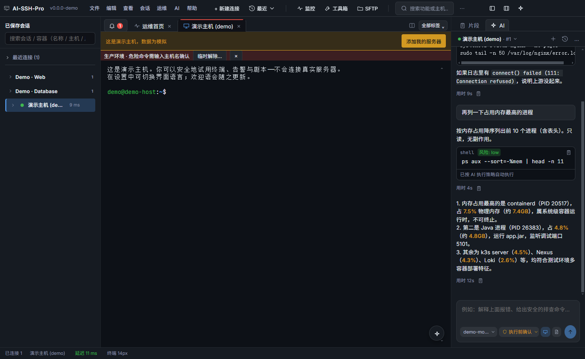
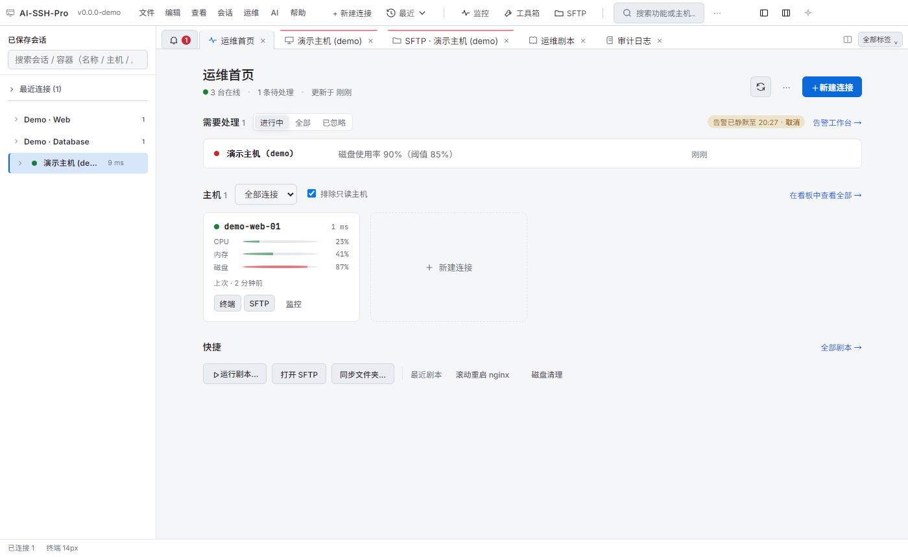
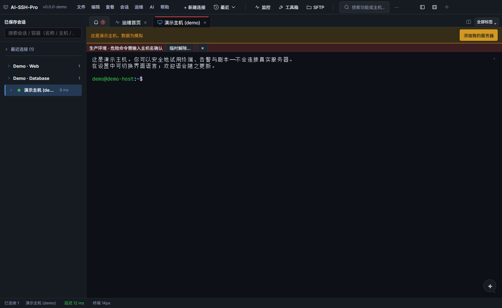
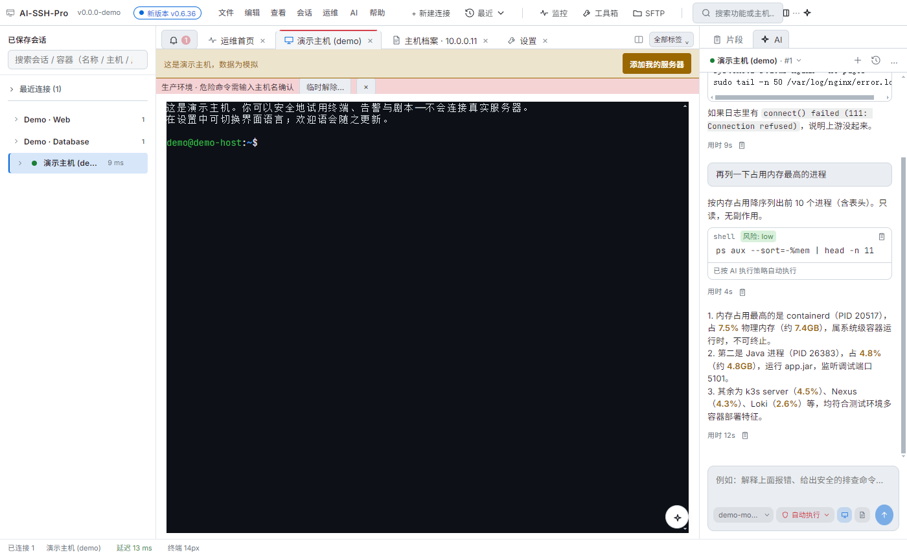
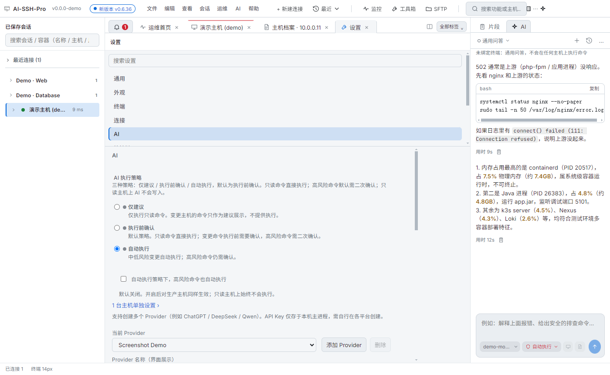
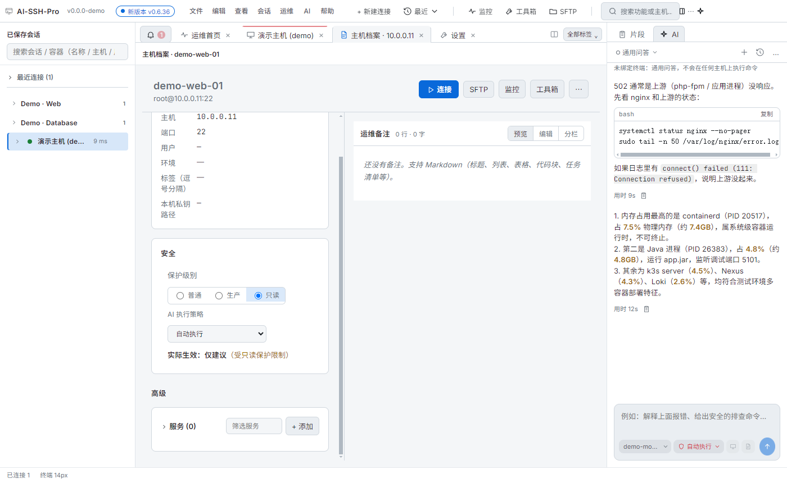
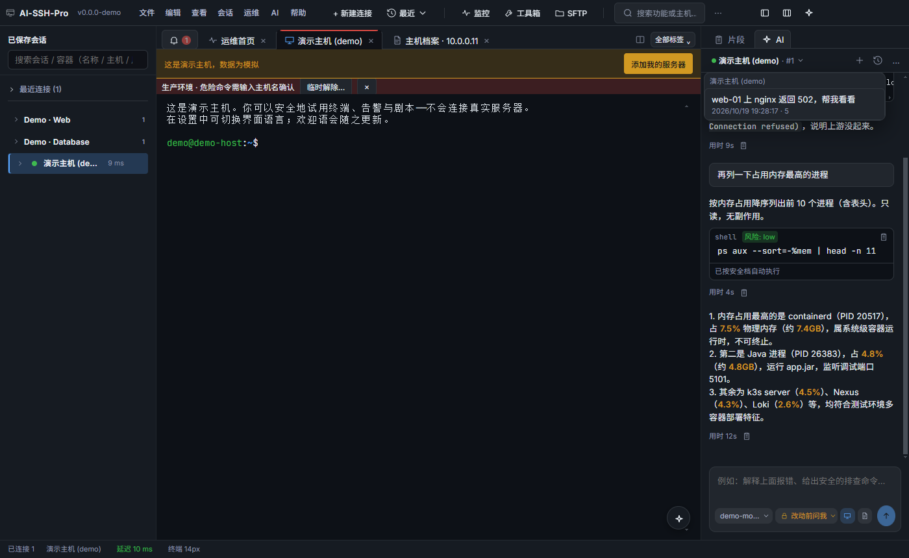
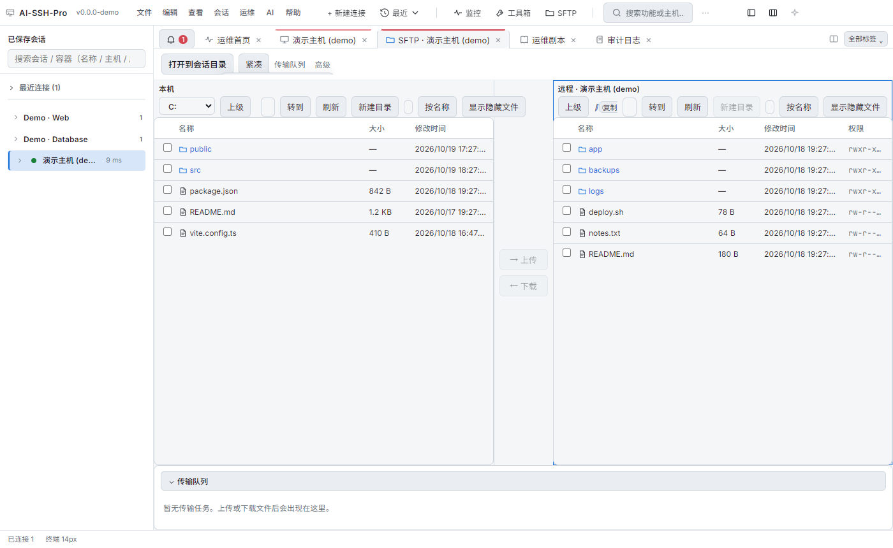
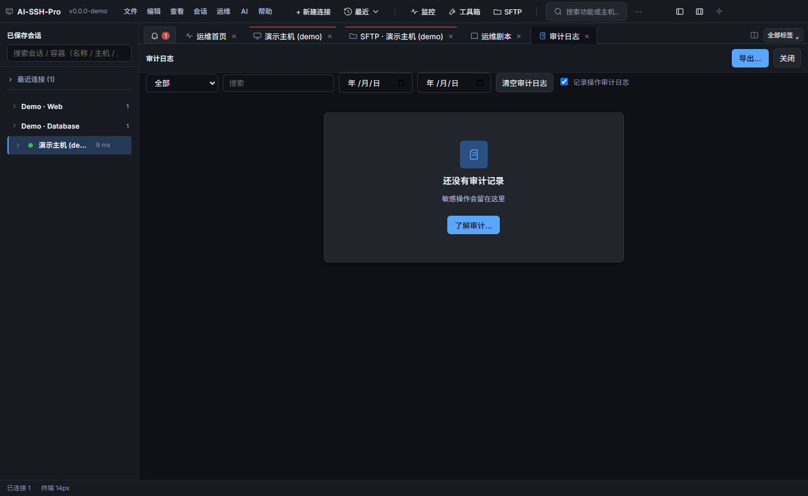

CSDN 草稿预览 · 未发布 · 图片与本文件同目录
AI-SSH-Pro：带 AI 助手、默认安全的多会话 SSH 桌面客户端
一句话介绍：AI-SSH-Pro 是一款本地运行的多会话 SSH 客户端，集成了 Cursor 风格的 AI 运维助手。AI 给出建议，执行策略由你决定：仅建议、执行前确认或自动执行。

封面：终端 + AI 助手
- 官网：https://guoshuaipeng.github.io/ai-ssh-pro/
- 下载：https://github.com/guoshuaipeng/ai-ssh-pro/releases
- 开源协议：MIT
一、适合谁
- 运维 / SRE：每天同时盯好几台机器，要一个界面看全状态。
- 后端开发：经常上服务器查日志、重启服务，希望 AI 帮你把排查步骤理清楚。
- 小团队负责人：想用 AI，又希望每台主机的执行权限可控。
- 从 Xshell / FinalShell 迁移的用户：熟悉多标签、会话树的操作方式。
二、核心能力
1. 运维首页：一眼看清所有主机
打开就是运维首页：
- 在线主机数、待处理告警，放在最上面。
- 每台主机一张卡片，显示 CPU、内存、磁盘的实时指标。
- 卡片上一键进入终端、SFTP、监控。
- 常用运维剧本（如滚动重启 nginx、磁盘清理）放在快捷区。

运维首页与主机指标
2. 多会话 SSH 与标签页
- 多标签、分屏、会话分组，支持搜索和 #标签 过滤。
- 支持跳板机（多级 ProxyJump）、端口转发、主机密钥确认。
- 可导入
~/.ssh/config，最近连接一键重连。
- 生产主机的标签页带醒目横幅，时刻提醒当前环境。

终端与生产环境提示
3. AI 助手：Cursor 风格的右侧面板
AI 面板常驻终端右侧，排障时不用切窗口。
- 你的提问是浅色气泡，AI 回复是干净的正文，不堆卡片。
- 建议命令合并成一个紧凑代码块，带 复制 / 执行 和风险标签（低 / 中 / 高）。
- 每条回复下方显示耗时，可一键复制。
- 输入区一行完成：模型、执行策略、附带终端输出、发送；模型与策略均为主题化弹出菜单。

AI 面板中的命令块
4. 三档 AI 执行策略
在 设置 → AI 里选一档就行：
| 策略 |
行为 |
| 仅建议 |
仅执行只读命令，变更命令只作为建议展示 |
| 执行前确认（默认） |
只读命令直接执行，变更命令执行前需确认，高风险需二次确认 |
| 自动执行 |
中低风险自动执行，高风险仍需确认 |
- “自动执行”下可单独开启“高风险命令也自动执行”，默认关闭。
- 输入区的策略菜单可为当前标签页临时调整，只读主机上不可用的选项会直接注明原因。

AI 执行策略设置
5. 主机保护：每台主机单独设定
每台主机的设置里都有一张 安全 卡片：
- 保护级别：普通 / 生产 / 只读。
- 这台主机的 AI 策略：跟随全局，或单独选一档。
- 卡片直接显示实际生效的策略，例如：“实际生效：仅建议（受只读保护限制）”。

主机安全卡片
6. 对话绑定标签页，历史可找回
- 每个终端标签页是一段独立对话；同一主机开两个标签页，就是 #1、#2 两段。
- 点 ＋ 新对话 会归档当前对话，不会直接删除。
- 历史对话按主机分组，点击即可恢复。
- 终端断开时提示“重新连接后继续”；没有绑定终端时是通用问答，不会执行任何命令。

按主机分组的历史对话
7. SFTP 双栏与更多运维工具
- SFTP 双栏：本地与远程并排，拖拽上传下载，带传输队列。
- 监控：资源监控、多主机看板、告警规则与告警工作台。
- 工具箱：进程、端口、服务、日志、Docker 容器与 Compose。
- 效率：命令片段、运维剧本、批量执行、多会话广播、会话录制与回放。
- 审计：敏感操作留痕，可按时间筛选与导出。

SFTP 双栏文件传输

多标签与审计日志
三、安全设计
安全不是一个开关，而是几层叠加：
- 主进程兜底：AI 写终端前，主进程会按主机保护再检查一次。只读主机即使点了同意，AI 也无法写入。
- 策略由你决定：全局、主机、标签页三级设置，所选策略在任何主机上按原样生效；生产主机保留醒目横幅作为提醒。
- 一个规则，处处一致：设置页、主机卡片、AI 输入区和后台执行用同一套规则计算实际策略，不会出现“界面说要确认、后台却直接跑”。
- 临时调整有边界：可以为当前标签页临时调整策略，只保存在内存中，关闭或断开即恢复，仍受只读保护限制。
- 凭据只在本机：密码、私钥口令、API Key 用系统安全存储加密保存在本机，不上传到任何产品云端。
- 全程可追溯：AI 发起的命令和危险操作都记入审计日志。
四、下载安装
- 打开 GitHub Release 页面：https://github.com/guoshuaipeng/ai-ssh-pro/releases
- 下载最新版本的安装包（以 Release 页面实际提供的文件为准）。
- 安装后启动，可以先连内置的演示主机体验，数据全部模拟，不会连接真实服务器。
- 在 设置 → AI 填入你自己的模型 Provider（支持 OpenAI 兼容接口，如 DeepSeek、通义千问等）。
更多介绍与使用说明见官网：https://guoshuaipeng.github.io/ai-ssh-pro/
五、最后
如果你想要一款顺手的多会话 SSH，又希望 AI 给出方案、由你决定执行方式，欢迎试试 AI-SSH-Pro。
- 觉得有用，欢迎到 GitHub 点个 Star。
- 遇到问题或有想法，直接提 Issue：https://github.com/guoshuaipeng/ai-ssh-pro/issues